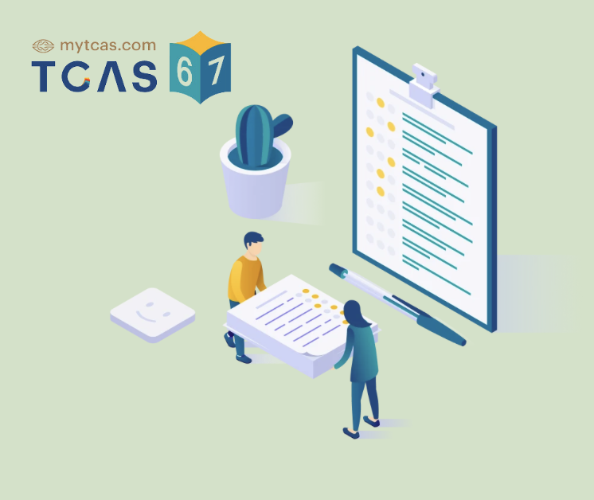

TCAS
TCAS ย่อมาจาก Thai University Central Admission System คือ ระบบการคัดเลือกสอบเข้ามหาวิทยาลัย
โดยเปรียบเสมือนพื้นที่กลางที่มหาวิทยาลัยเข้าระบบมาเพื่อรับสมัครนักเรียน
และนักเรียนก็สามารถเข้ามาหามหาวิทยาลัยที่ต้องการได้
แม้ว่า TCAS สามารถสมัครได้ทุกวุฒิทั้ง ม.6 สายอาชีพ เทียบเท่า และเทียบวุฒิ GED
อย่างไรก็ตามต้องดูรายละเอียดคณะอีกครั้งว่ารับทุกวุฒิหรือไม่ ปัจจุบัน รูปแบบ TCAS67 แทบจะไม่แตกต่างจาก
TCAS66 เลย ทั้งเรื่องระบบการจัดการ และข้อสอบ รวมถึงการคัดเลือกต่างๆ สำหรับ TCAS67 แบ่งการรับออกเป็น 4
รอบ ดังนี้
รอบที่ 1 รอบ Portfolio (ใช้แฟ้มสะสมผลงาน)
รอบที่ 2 รอบ Quota (รอบโควตา)
รอบที่ 3 รอบ Admission (รอบแอดมิชชั่น)
รอบที่ 4 รอบ Direct Admission (รอบรับตรงอิสระ)

รอบ 1 Portfolio
รอบ Portfolio เป็นการรับนักเรียน โดยเน้นคัดเลือกจากคุณสมบัติของผู้สมัคร
และพิจารณาจากแฟ้มสะสมผลงาน (Portfolio), เกรดเฉลี่ย (GPAX) หรือคุณสมบัติอื่นๆ
ที่มีความเกี่ยวข้องกับสาขานั้นๆ แต่ละคณะ/มหาวิทยาลัย
จะกำหนดลักษณะหรือรูปแบบของแฟ้มสะสมผลงานที่แตกต่างกัน
เช่น จำนวนผลงาน, ประเภทของผลงาน, ระดับการแข่งขันของผลงาน ไปจนถึงการเขียนเรียงความ อย่างไรก็ตามใน
TCAS67 อาจมีบางแห่งนำคะแนนสอบส่วนกลางมาใช้ด้วย
รอบ 2 Quota
รอบโควตา เน้นการรับสมัครนักเรียนที่มีคุณสมบัติเฉพาะ เช่น กลุ่มนักเรียนในเขตพื้นที่
กลุ่มนักเรียนในโควตาโรงเรียน
กลุ่มนักเรียนในภูมิภาค หรือ กลุ่มนักเรียนที่มีความสามารถพิเศษ จะใช้คะแนนสอบส่วนกลางที่ ทปอ.
เป็นผู้จัดสอบ เช่น
TGAT/TPAT A-Level หรือ มหาวิทยาลัยจัดสอบวิชาเฉพาะของตนเอง รวมถึงอาจมีการใช้ GPAX และ GPA 6 เทอม
ยังถือเป็นรอบที่มีเกณฑ์คัดเลือกที่หลากหลาย
เพราะมหาวิทยาลัยเป็นผู้กำหนดเกณฑ์คัดเลือกเองเพื่อให้ได้นักเรียนที่ตรงตามความต้องการมากที่สุด
รอบ 3 Admission
รอบ Admission เป็นรอบสำคัญ ที่มหาวิทยาลัยในระบบ TCAS ทั่วประเทศ รวมทั้ง กสพท
จะเปิดรับสมัครพร้อมกันผ่านระบบกลาง
ทปอ. ที่เว็บไซต์ myTCAS โดยกำหนดการรับจะอยู่ในช่วงเดือนพฤษภาคม
ซึ่งจำนวนที่เปิดรับในรอบนี้อาจมีการเปลี่ยนแปลงได้ หากในรอบ
1 และ 2 มหาวิทยาลัยนั้นๆ ได้จำนวนนักเรียนไม่ครบ ก็มีโอกาสที่จะเปิดรับเพิ่มในรอบ 3 Admission
รอบ 4 Direct Admission
รอบ 4 Direct Admission หรือ รับตรงอิสระ เป็นรอบที่มหาวิทยาลัยเปิดรับเองหลังจากประกาศผลการคัดเลือกในรอบ 3
Admission แล้ว ซึ่งเกณฑ์คัดเลือก อาจเหมือนหรือแตกต่างจากรอบก่อนๆ ก็ได้
เน้นรับกลุ่มนักเรียนที่ยังไม่ผ่านการคัดเลือกรอบต่างๆ
หรือ นักเรียนที่สละสิทธิ์เพื่อมารอรอบถัดไป
FAQ
asdfghjkl
- asdfghjkl
asdfghjkl
- asdfghjkl
asdfghjkl
- asdfghjkl
asdfghjkl
- asdfghjkl